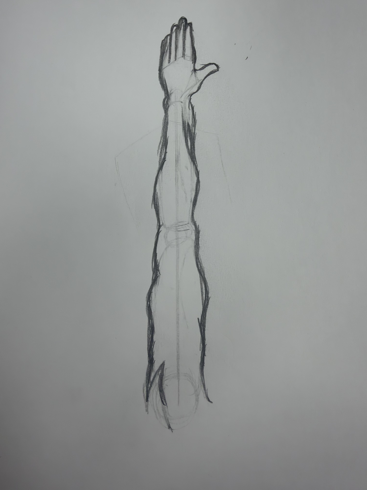

Now you want to carefully erase the shapes and light skecthes you did in steps 1 and two. Be careful as to try and not erase the line work you just did since those finer details will be important. even if you did, no problem. You cna redraw or trace over them again and maybe even improve now that you have a more clear look.
Previous Next